Former
Des ateliers, des hackathons et des parcours pour apprendre en faisant, avec celles et ceux qui construisent déjà.
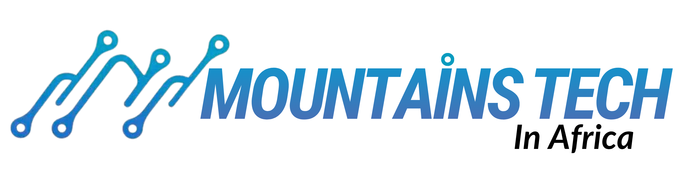
Rejoindre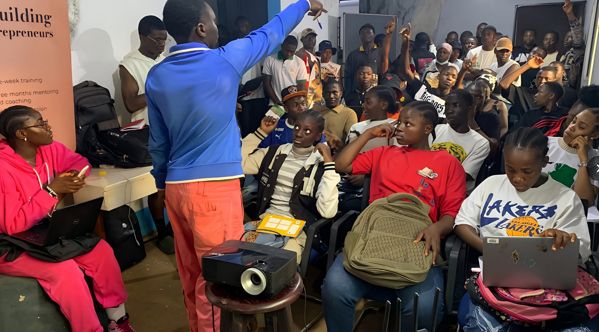
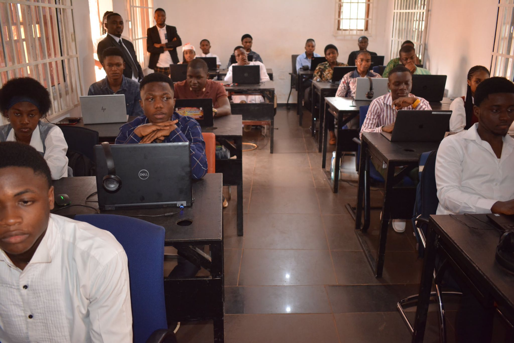
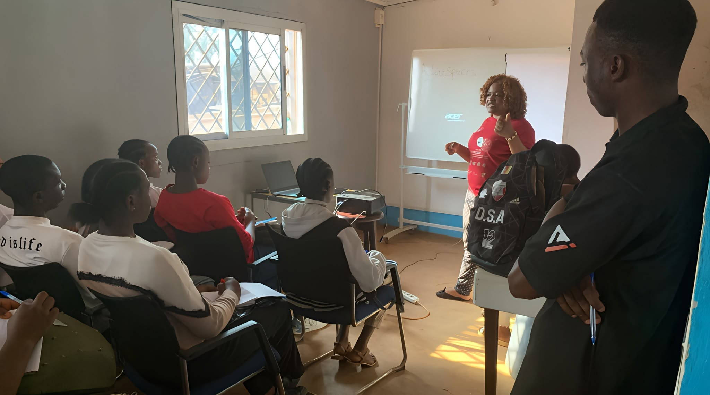
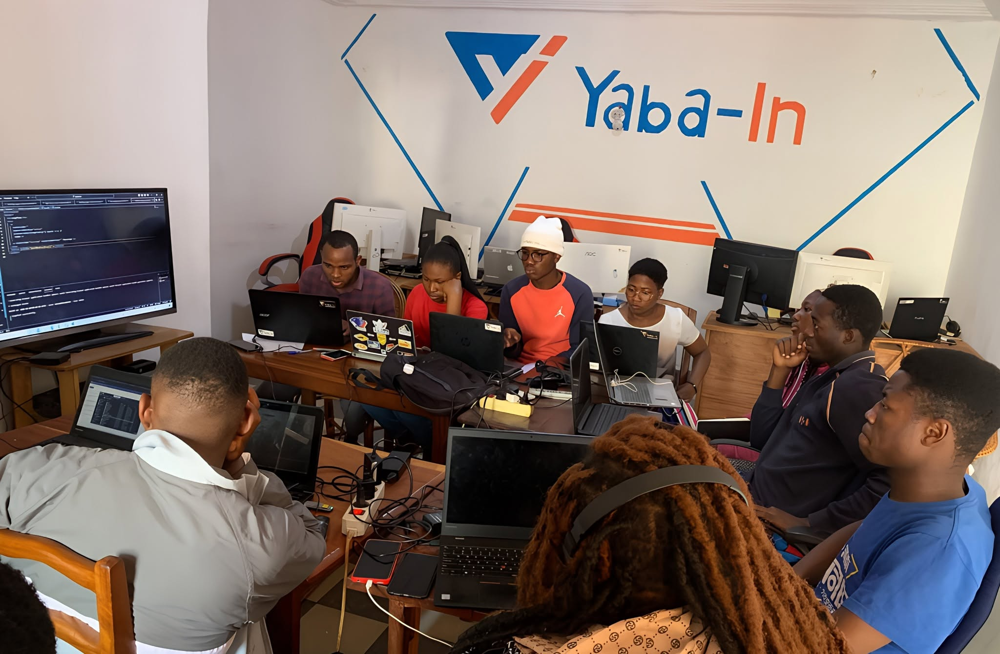
2025
Le technopôle de Bangangté, où les talents, les entreprises et les partenaires construisent la tech camerounaise.
2025
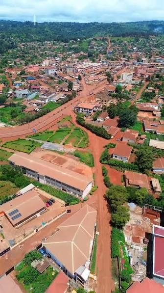
Bangangté, Cameroun
Depuis le 11 janvier 2025
MountainsTech est né à Bangangté, au cœur des hauts plateaux de l’Ouest Cameroun. Le technopôle rassemble des développeurs, des startups, des étudiants et des partenaires autour d’une même ambition : faire de la tech une force utile au territoire. Ici, on forme, on prototype, on teste et on lance. Les projets naissent des problèmes réels des entreprises et des communautés, puis grandissent avec l’accompagnement de celles et ceux qui les portent. Ce n’est pas un campus de plus : c’est un lieu où l’on apprend en faisant, ensemble.
Le 11 janvier 2025, à Bangangté, un technopôle ouvre. 500 jeunes talents et 12 entreprises plus tard, la même ambition.
Un technopôle ne se résume pas à un lieu. C’est un programme : apprendre, construire, rencontrer, recommencer.
Des ateliers, des hackathons et des parcours pour apprendre en faisant, avec celles et ceux qui construisent déjà.
Un lieu, des mentors et des outils pour passer d’une idée à un produit testable, puis à un projet réel.
Des rencontres entre talents, entreprises et partenaires pour faire circuler les idées et les opportunités.
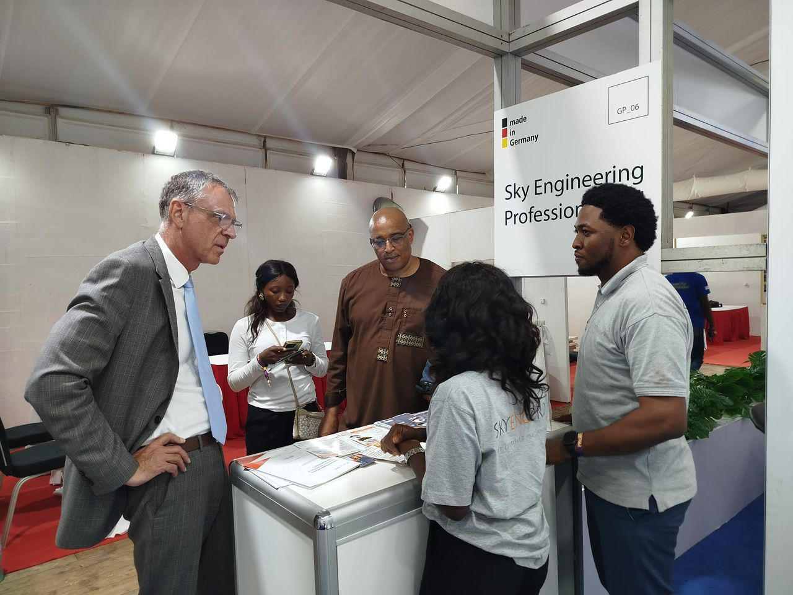
Un accompagnement dans la durée, ancré à Bangangté et tourné vers les marchés africains.
À Bangangté, le réseau rassemble des développeurs, des entreprises, des écoles et des partenaires. Un même lieu pour apprendre, prototyper et connecter les talents de l’Ouest Cameroun.
Le technopôle est officiellement lancé le 11 janvier 2025, à l’occasion d’un hackathon. Depuis, les ateliers, les rencontres et les projets rapprochent celles et ceux qui construisent la tech camerounaise.
Huit organisations, un même relief.
Les rendez-vous du technopôle, ouverts à toutes et tous.
Une rencontre pour explorer ce que l’IA change dans la cuisine, les recettes et les métiers de bouche.
Un rendez-vous proposé par MountainsTech, à Bangangté.
Vous avez une idée, un prototype ou un problème à résoudre ? Le technopôle met à disposition un lieu, des mentors et un réseau pour la transformer en projet.
Un lieu, des mentors.
Un réseau pour passer de l’idée au projet. Racontez-nous ce que vous voulez construire.
Proposer un projetDes entreprises, des écoles et des structures qui croient à la tech camerounaise.
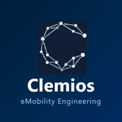
Clemios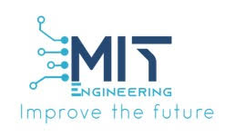
Mboa Intech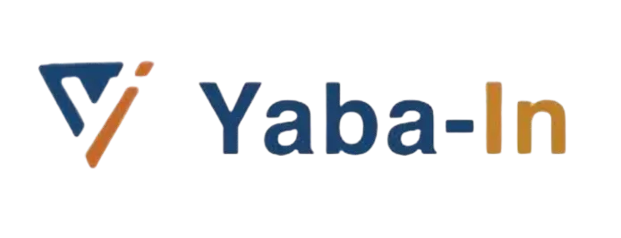
Yaba-In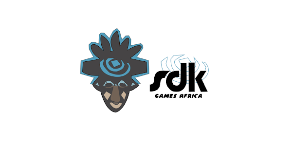
SDK Games Africa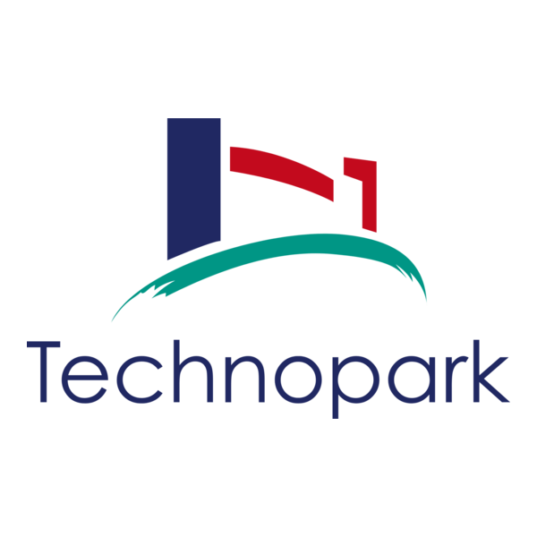
TechnoPark MeMeLe prochain sommet se construit à plusieurs. Rejoignez le réseau, proposez un projet, ouvrez un atelier.
Rejoindre MountainsTech